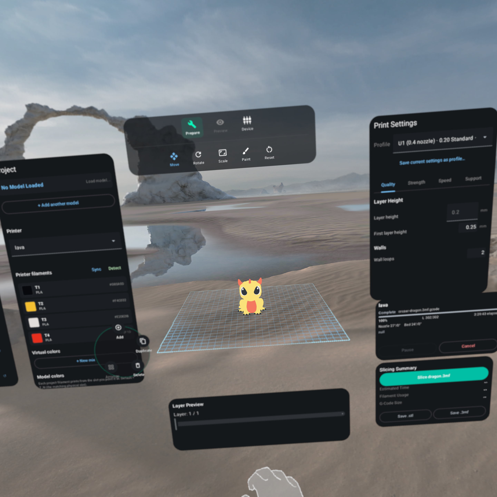

Android XR headsets
- Samsung Galaxy XR — primary target
- Other Google Android XR devices
Built on Jetpack XR (SceneCore + ARCore for XR).
The future of 3D printing is spatial
OrcaXR is built spatial-first for Android XR — and runs on Android phones and tablets too.
Plate at 1:1 in your room or at desk-scale on your phone, paint multi-color, drive
every action from an LLM over MCP, and ship straight to Klipper over your LAN —
powered by a native arm64-v8a build of libslic3r.

See exactly how a model fits on the desk it's destined for. Plate, scale, rotate, and slice without ever leaving your room.
Native arm64-v8a cross-compile of libslic3r v2.3.2 — the same engine OrcaSlicer ships, with no cloud round-trip.
Native Moonraker upload and live job monitoring for Snapmaker U1, Elegoo Centauri Carbon, and any Klipper printer on your LAN.
Why OrcaXR
Every layer — UI, slicing engine, networking — is tuned for the spatial era, not ported from a desktop window.
Per-triangle color, support, seam, fuzzy-skin and brim-ear paint — all spatial. Multi-step undo, smart-fill flood, full 3MF round-trip preserved end-to-end.
arm64-v8a cross-compile of v2.3.2. The exact same toolpath generator you trust on the desktop, running locally on your headset.
Mesh repair (CGAL self-union), planar cut, boolean ops, connected-component split, quadric simplify, text/SVG embossing, and 7 add-primitive shapes.
Virtual build plates partition your project. Multi-object 3MFs split into independently selectable parts. Multi-selection drag, batch delete, auto-arrange.
Auto-discover printers on your LAN, upload G-code, and watch the job live. AFC slot sync + filament-runout badges for the Snapmaker U1.
Switch to Devices mode and the toolpath GLB grows in lockstep with the physical print head's reported Z height — your living room becomes the print monitor.
Slicing runs 100% locally. No telemetry, no analytics, no cloud uploads of your models. Ever.
Spatial slicing
OrcaXR is what happens when you delete the desktop assumptions and start from gaze, hands, and depth.
Stand next to the printer. The plate matches your hardware to the millimeter, so fit problems are obvious before they're expensive.
Move and rotate models with your hands. Transform gizmos snap to your gaze. Galaxy XR controllers are supported for precision work.
Pull the layer slider out of a sidebar and into 3D space. Inspect toolpaths from any angle, painted with real per-extruder colors.
Project, transform, settings, slicing summary — all floating where you need them, never blocking the model.
AI & MCP
Every action a hand can take in OrcaXR is also an MCP tool. Point Claude (or any MCP-aware LLM) at the headset's LAN address and it can plate, paint, slice, and send to the printer — by voice, by text, or autonomously.
Bearer-token authed JSON-RPC over a hand-rolled HTTP transport. Tools cover printers, profiles, filaments, plates, transforms, slicing, saving, mesh ops, paint, vision rendering, and digital-twin telemetry. An MCP-driven action and a hand-pinch flow through the same observers — same paint history, same caches, same end result.
Spatial paint primitives (sphere, slab, normal-cone, geodesic disc, mirror) + vision tools (multi-view render, triangle-ID maps, feature anchors, decal projection). Bundled paint recipes auto-resolve MakerWorld design IDs.
Android SpeechRecognizer → regex intent mapper → workspace action. "Slice the active plate." "Auto-arrange." "Show me layer 142." Destructive intents prompt for confirmation.
Pure-Kotlin software rasterizer renders multi-view PNGs, served over GET /resources/<token>.png so a remote LLM with WebFetch can pull them directly from the headset.
No install required
OrcaXR also ships as a pure-web app. Open it in any modern browser to plate, paint, and slice with the same libslic3r engine — this time cross-compiled to WebAssembly and threaded in the tab. No APK, no account, nothing to install.
The web app is built on Google's XR Blocks + three.js, with libslic3r compiled to WebAssembly and run on a worker thread. One shared action registry renders both the desktop overlay and the immersive WebXR shell, so every capability is reachable in either mode.
Orbit, drag, paint, and slice in a normal browser tab. Add primitives and calibration models, tune supports and infill, then download G-code straight to your machine.
Open the same URL in the Galaxy XR browser and enter XR — the build plate and tool panels float around you, driven by the very same registry as the desktop shell.
Compatibility
Built on Jetpack XR (SceneCore + ARCore for XR).
Same APK, same libslic3r core, same MCP server — the shell adapts to the device.
Bring more profiles? PRs welcome.
By design: keep the surface area focused while the project is young.
Built on giants
We didn't reinvent the slicer — we wrapped a great one in a spatial body. Credit where it's due:
3D printing involves high temperatures, moving parts, and fire risk. OrcaXR is in early alpha — slicing errors, unexpected G-code, or printer communication failures can happen.
Beta access
OrcaXR is currently in early alpha. Here's how to start slicing in space.
Access to the Play Store beta is restricted to members. Join our Google Group to get authorized.
Join Google GroupOnce you are a group member, opt-in to the testing program to enable the Play Store download.
Become a TesterDownload OrcaXR directly from the official store onto your XR headset, phone, or tablet. Automatic updates included.